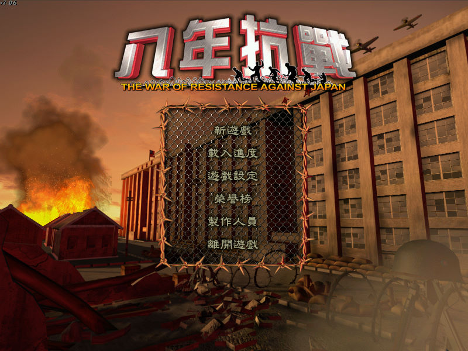
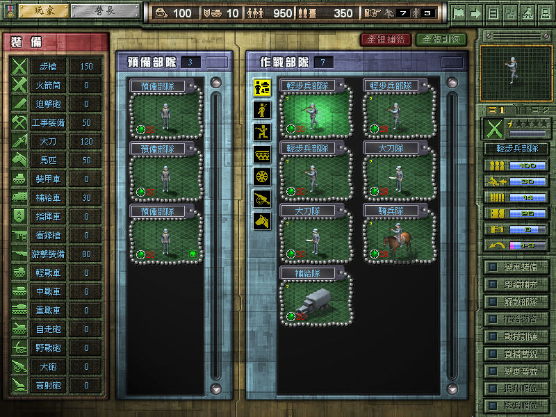
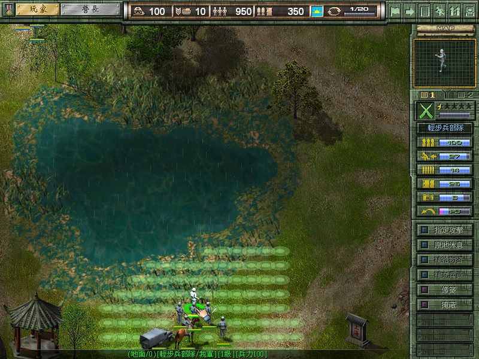

名稱：八年抗戰 (The War of Resistance Against Japan，中文版) 簡介：尼奧2001年出品的戰術遊戲，各關卡採回合戰棋方式戰鬥 [待補]。


保護：光碟 備註：本遊戲有2001年2CD原始版，與2005年1CD對日抗戰勝利六十週年紀念版等兩種，後者 已為1.06版。對日抗戰勝利六十週年紀念版有2008年的再版，主要是修正安裝程式， 遊戲內容並未改變。 備註：2008版無法在Win9x系統上安裝。 修改：Wor.exe 1.修正虛擬機+XP/Win9x系統執行時，一進入戰場就當機的問題 （也可改在Win64實機或PCem+Win98執行） F7 F1 8B D8 8B 44 24 10 F7 F1 90 90 -- -- -- -- -- -- 90 90 檔案：WOR_Update106.rar = 1.06更新檔 WOR_Special.rar = 釣魚台關卡資料片（先更新至1.06）